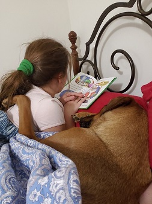
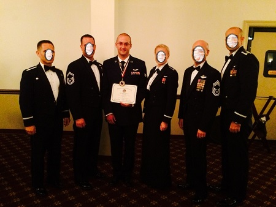
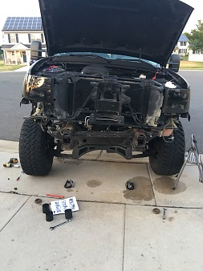
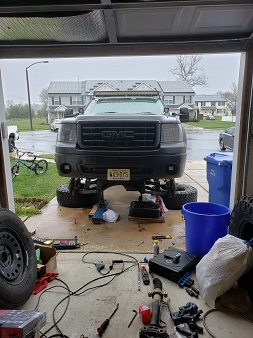

More About Me


In 2011 I started my next life adventure in the Air Force. I got very lucky with the job I was given but I wouldn't find that out or see that until later once I was done with training. I spent a few months in Texas for my military training and then a little for my job. After that I was off to my one and only station in New Jersey. Being a Southern person, I wasn't too excited about this even after spending a year and a half in Virginia. This lifestyle definitely wasn't easy but I really do miss this job. I learned a lot of things, changed even more as a person, met so many different and wonderful folks (not everyone if I'm being honest), and got to travel the world that I would have never seen in my lifetime. After 10 years I decided to call it quits since 8 of those years I was a single parent. I have so many stories and wish I could have created more but my daughter and I were tired and wanted something new. I figured I wanted to finish my Architecture degree but after my 6th and last deployment, I went with coding/programming. I had numerous talks with one of my pilots and made the final decision there that this was the path I wanted to take. Couldn't be more happy about it.


Some of my hobbies include many things but my favorite is working on my truck. This was my dream truck as a kid. Other things I enjoy doing are yard work, remodeling things in the house (i.e. painting, decks/porches, flooring, etc.), building things out of wood (example would be making a workbench for my garage), working and playing on my computer that I built, a little reading but nothing crazy, fixing things, etc. I like to stay busy but also like to relax. Also my daughter keeps me busy with things as far as school and sports. She is also active and loves going out and doing stuff. We've been to Disney and many other places but spend a lot of time with family at the moment. Right now we are back at my parents house and soon my daughter and I will find a house. We are very excited with this new life and I have many plans for us since not only will I be making more than I did in the military but I'll also be around more. If you've made it this far then I appreciate you reading all of this and learning a little more about me. This is a very small part about my life but I'm happy that you know me a little more now.